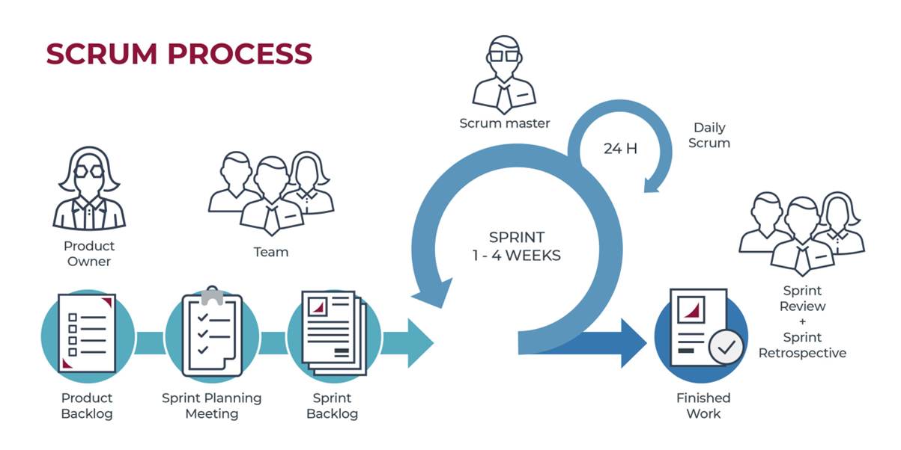
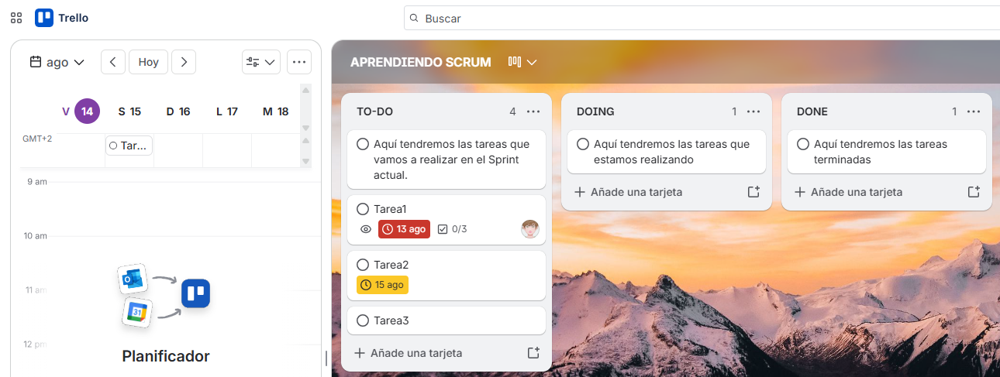

Unidad 0: Nos preparamos para levantar el vuelo
Descargar estos apuntes
Presentación del módulo
Calendario del curso
- Primera evaluación: hasta última semana noviembre
- Segunda evaluación: hasta última semana de febrero
- Formación en empresa: a partir del 23 de marzo.
- Evaluación final ordinaria: primera quincena de junio
- Convocatoria extraordinaria: segunda quincena de junio
Normativa sobre la asistencia
- La asistencia a clase es requisito fundamental para llevar a cabo el proceso de evaluación continua, por lo que, aplicando la legislación vigente a tal efecto, la ausencia (ya sea justificada o no) al 15% o más de las horas asignadas al módulo conllevará la pérdida de este derecho, pudiendo en este caso el alumnado optar por la realización de una prueba final, que podrá ser elaborada por el/la docente expresamente para este fin.
- Por otra parte, la inasistencia injustificada (o con justificación improcedente) al 15% o más de las horas totales correspondientes a los módulos en los que se haya matriculado el alumnado podrá conllevar la anulación automática de la matrícula. También podrá ser motivo de anulación de matrícula la inasistencia injustificada durante 10 días consecutivos.
Metodología de trabajo: Scrum
Vamos a trabajar en equipo sobre el marco de trabajo Scrum, al igual que se hace en la inmensa mayoria de empresas, como Google o Apple.

Scrum es un marco de trabajo que se repite. Cada nueva iteración o Sprint, normalmente de 2 semanas, se realizarán las siguientes tareas:
- Planificar el Sprint preparando el tablero del equipo.
- Cada día se hará una reunión diaria (Daily) de seguimiento. Max. 5min. Se trata de responder a tres preguntas: ¿Que hice ayer?, ¿Que voy a hacer hoy?, ¿Que problemas tengo?.
- Al acabar el Sprint se realizará la entrega/presentación (Review), y se revisará con el profesorado para dar las correcciones oportunas.
- Se hará una reunión de retrospectiva(retrospective) en la que se analizará la forma de trabajar, buscando la mejora continua para la siguiente iteración.
Usaremos un tablero en Trello para ir viendo el avance del equipo.

Unidades
- Unidad 1: Aplicaciones Ofimáticas web. Instala aplicaciones de ofimática web, describiendo sus características y entornos de uso.
- Unidad 2: Aplicaciones web de escritorio. Instala aplicaciones web de escritorio, describiendo sus características y entornos de uso.
- Unidad 3: Gestión de archivos web. Instala servicios de gestión de archivos web, identificando sus aplicaciones y verificando su integridad.
- Unidad 4: Gestor de Contenidos. Instalación local. Instala gestores de contenidos, identificando sus aplicaciones y configurándolos según
requerimientos.
- Unidad 5: Gestor de Contenidos. Instalación en la nube. Instala gestores de contenidos, identificando sus aplicaciones y configurándolos según
requerimientos.
- Unidad 6: Personalizamos las aplicaciones web con HTML y CSS.
- Unidad 7: Personalizamos las aplicaciones web con HTML y CSS. Avanzado.
- Unidad 8: Sistemas gestores de aprendizaje en local. Instalación en local sistemas de gestión de aprendizaje a distancia, describiendo la estructura del sitio y la jerarquía de directorios generada.
- Unidad 9: Sistemas gestores de aprendizaje en la nube. Instalación en la nube sistemas de gestión de aprendizaje a distancia, describiendo la estructura del sitio y la jerarquía de directorios generada.
Evaluación
El alumnado podrá superar el módulo (nota >=5) mediante:
- Evaluación Continua. Será la calificación obtenida durante el curso cuando el alumnado no ha perdido el derecho de evaluación continua.
- Evaluación Final Ordinaria. Se aplicará cuando el alumnado haya perdido el derecho a la evaluación continua. La evaluación final consiste en una serie de actividades y pruebas teórico-prácticas agrupadas por unidades didácticas o resultados de aprendizaje.
- Evaluación Final Extraordinaria. Se aplicará cuando el alumnado no haya superado el módulo en la evaluación final ordinaria. La evaluación final extraordinaria consiste en una serie de actividades y pruebas teórico-prácticas agrupadas por unidades didácticas o resultados de aprendizaje. El alumnado realizará todas las partes de la prueba, pertenecientes a todas las unidades. La calificación seguirá obteniéndose con los mismos pesos de ponderación.
| Unidad/Sprint |
Ponderación |
| Unidad 1 |
10% |
| Unidad 2 |
10% |
| Unidad 3 |
10% |
| Unidad 4 |
10% |
| Unidad 5 |
20% |
| Unidad 6 |
0% |
| Unidad 7 |
10% |
| Unidad 8 |
10% |
| Unidad 9 |
20% |
Durante la tercera evaluación, se podrá proponer un proyecto de manera voluntaria, que será evaluado con un 10% adicional a la nota final del módulo. El proyecto se podrá realizar de manera individual o en equipo, y deberá ser aprobado previamente por el profesorado.
La nota del proyecto se sumará a la nota final del módulo, siempre que la nota final del módulo sea >=5. En caso contrario, la nota del proyecto no se sumará a la nota final del módulo.
La evaluación del módulo tendrá en cuenta el informe del tutor /a de la empresa para la evaluación final del módulo tanto en convocatoria ordinaria como en extraordinaria. Se podrán tener en cuenta las aportaciones cualitativas para aumentar hasta un máximo de 1 punto la calificación de la evaluación final.
Calificación de cada Sprint
- Examen 40% (en el caso de que no haya examen, será el 100% el proyecto)
- Proyecto 60%
- Nota del proyecto (grupal):
- Checklist
- Proceso
- Producto
- Presentación
- Retrospectiva
- Parte individual:
- Autoevaluación individual
- Nota de co-evaluación del grupo
¿Cómo se va a co-evaluar el proyecto?
Mediante el Método Goldfinch, que consiste en que cada miembro del equipo evalúa a los demás miembros del equipo y se obtiene una nota media de todos los miembros del equipo. Esta nota media se multiplica por la nota del proyecto para obtener la nota final del proyecto para cada persona de manera individual.